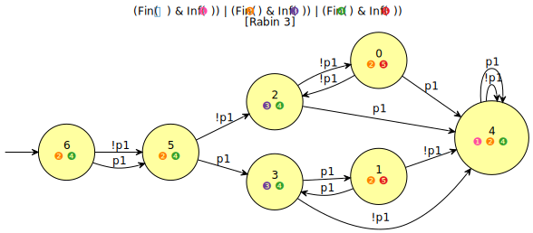
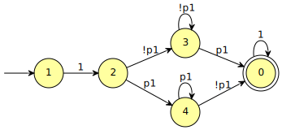

Converting Rabin (or Other) to Büchi, and simplifying it
Consider the following Rabin automaton, generated by ltl2dstar:
ltldo ltl2dstar -f 'F(Xp1 xor XXp1)' > tut30.hoa

Our goal is to generate an equivalent Büchi automaton, preserving determinism if possible. However nothing of what we will write is specific to Rabin acceptance: the same code will convert automata with any acceptance to Büchi acceptance.
Shell
We use autfilt with option -B to request Büchi acceptance and
state-based output and -D to express a preference for deterministic
output. Using option -D/--deterministic (or --small) actually
activates the "postprocessing" routines of Spot: the acceptance will
not only be changed to Büchi, but simplification routines (useless
SCCs removal, simulation-based reductions, acceptance sets
simplifications, WDBA-minimization, …) will also be applied.
autfilt -B -D tut30.hoa
HOA: v1 States: 5 Start: 1 AP: 1 "p1" acc-name: Buchi Acceptance: 1 Inf(0) properties: trans-labels explicit-labels state-acc complete properties: deterministic weak --BODY-- State: 0 {0} [t] 0 State: 1 [t] 2 State: 2 [!0] 3 [0] 4 State: 3 [0] 0 [!0] 3 State: 4 [!0] 0 [0] 4 --END--

In the general case transforming an automaton with a complex acceptance condition into a Büchi automaton can make the output bigger. However the postprocessing routines may manage to simplify the result further.
Python
The Python version uses the postprocess() routine:
import spot aut = spot.automaton('tut30.hoa').postprocess('BA', 'deterministic') print(aut.to_str('hoa'))
HOA: v1 States: 5 Start: 1 AP: 1 "p1" acc-name: Buchi Acceptance: 1 Inf(0) properties: trans-labels explicit-labels state-acc complete properties: deterministic weak --BODY-- State: 0 {0} [t] 0 State: 1 [t] 2 State: 2 [!0] 3 [0] 4 State: 3 [0] 0 [!0] 3 State: 4 [!0] 0 [0] 4 --END--
The postprocess() function has an interface similar to
the translate() function discussed previously:
import spot help(spot.postprocess)
Help on function postprocess in module spot:
postprocess(automaton, *args, formula=None)
Post process an automaton.
This applies a number of simlification algorithms, depending on
the options supplied. Keep in mind that 'Deterministic' expresses
just a preference that may not be satisfied if the input is
not already 'Deterministic'.
The optional arguments should be strings among the following:
- at most one in 'Generic', 'TGBA', 'BA', or 'Monitor',
'parity', 'parity min odd', 'parity min even',
'parity max odd', 'parity max even' (type of automaton to
build), 'coBuchi'
- at most one in 'Small', 'Deterministic', 'Any'
(preferred characteristics of the produced automaton)
- at most one in 'Low', 'Medium', 'High'
(optimization level)
- any combination of 'Complete', 'StateBasedAcceptance'
(or 'SBAcc' for short), and 'Colored (only for parity
acceptance)
The default corresponds to 'generic', 'small' and 'high'.
If a formula denoted by this automaton is known, pass it to as the
optional `formula` argument; it can help some algorithms by
providing an easy way to complement the automaton.
C++
The C++ version of this code is a bit more verbose, because the
postprocess() function does not exist. You have to instantiate a
postprocessor object, configure it, and then call it for each
automaton to process.
#include <iostream> #include <spot/parseaut/public.hh> #include <spot/twaalgos/postproc.hh> #include <spot/twaalgos/hoa.hh> int main() { spot::parsed_aut_ptr pa = parse_aut("tut30.hoa", spot::make_bdd_dict()); if (pa->format_errors(std::cerr)) return 1; if (pa->aborted) { std::cerr << "--ABORT-- read\n"; return 1; } spot::postprocessor post; post.set_type(spot::postprocessor::BA); post.set_pref(spot::postprocessor::Deterministic); post.set_level(spot::postprocessor::High); auto aut = post.run(pa->aut); spot::print_hoa(std::cout, aut) << '\n'; return 0; }
HOA: v1 States: 5 Start: 1 AP: 1 "p1" acc-name: Buchi Acceptance: 1 Inf(0) properties: trans-labels explicit-labels state-acc complete properties: deterministic weak --BODY-- State: 0 {0} [t] 0 State: 1 [t] 2 State: 2 [!0] 3 [0] 4 State: 3 [0] 0 [!0] 3 State: 4 [!0] 0 [0] 4 --END--